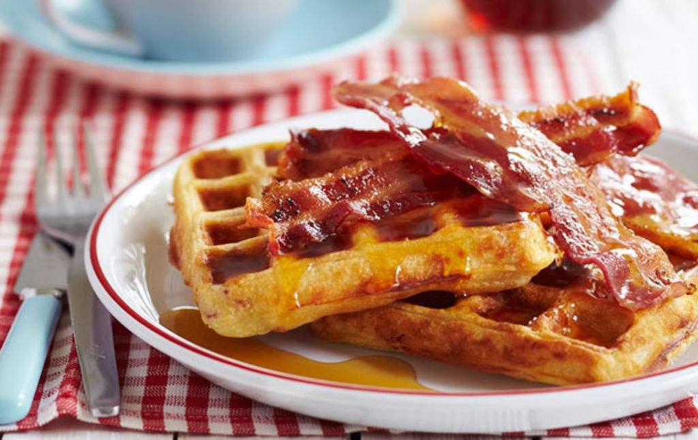

Description
This waffle recipe is the only one you'll need to make homemade waffles
with your waffle iron. Simple pantry ingredients mix up quickly in this
easy batter that can be used right away or stored in the refrigerator
for up to a week. Serve waffles hot with whipped cream and fresh fruit
or with butter and maple syrup for either breakfast, brunch, or a snack.
Ingredients
- This waffle recipe starts with two whole eggs, whisked until light and fluffy.
- All-purpose flour adds gluten, which gives the waffles structure. You can also use whole
wheat flour.
- Whole milk lends richness and moisture. Plus, it helps create the ideal batter consistency.
- A neutral oil, such as vegetable oil, ensures the waffles are nice and moist.
- A tablespoon of white sugar adds the perfect amount of sweetness.
- Baking powder acts as a leavener, which means it contributes to the waffles' light
and fluffy texture.
- A pinch of salt enhances the other flavors. Don't skip this step!
- A dash of vanilla adds complexity and enhances the overfall flavor.
- You'll need to spray the iron with nonstick cooking spray before you start making
the waffles.
Steps
- Whisk the eggs, then add the flour, milk, and oil. Whisk in the sugar. Stir in the remaining ingredients.
- Pour the batter onto the hot, prepared waffle iron. Cook until golden brown and repeat with the remaining batter.
Return to top
Return to main page